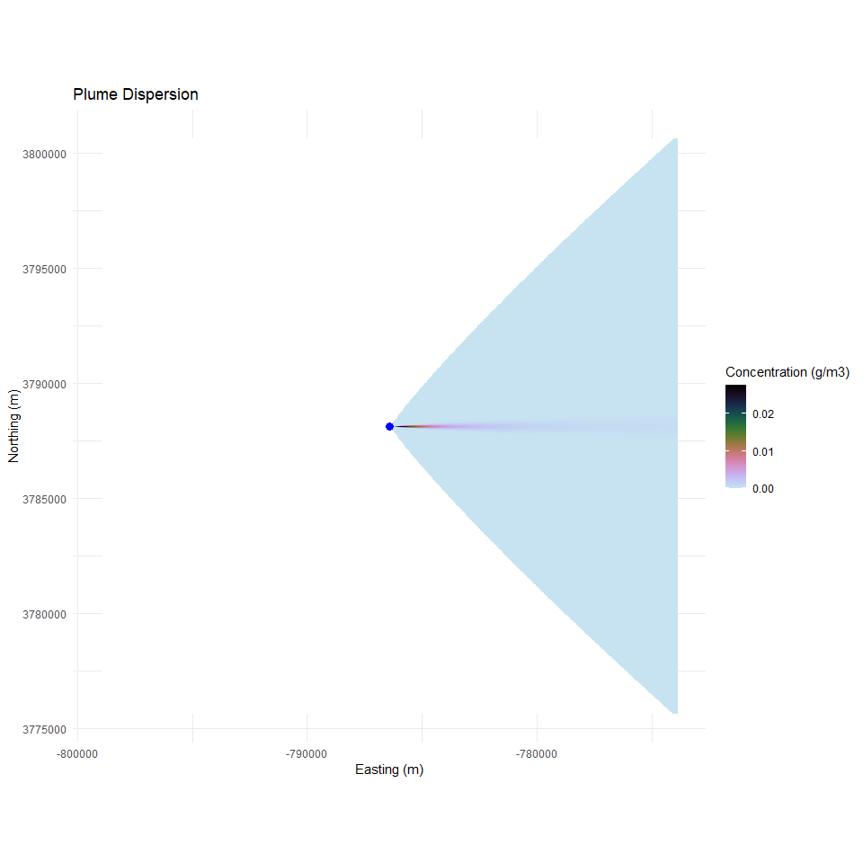
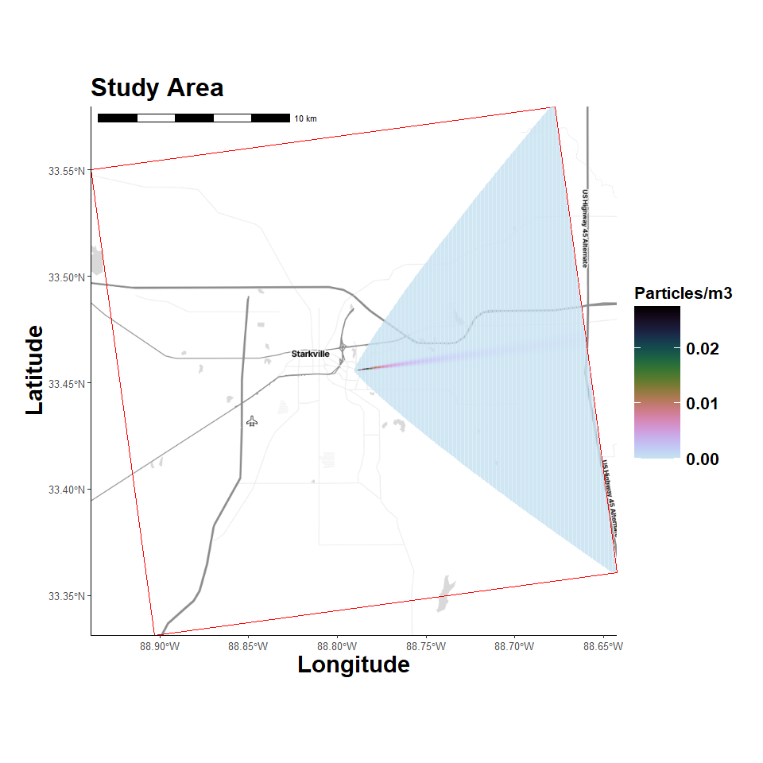

Gaussian Plume Model
4/13/25
- Libraries
- Custom Functions
- Create Study Area Grid
- Location Map
- Gaussian Plume
- Plume Parameters
- Pasquill Stability Classes
- Create Plume Function
- Apply Plume Function
- Plot Results
Libraries
Hide code
library(here)
library(tidyverse)
library(ggmap)
library(ggspatial)
library(sf)
library(terra)Custom Functions
Hide code
source(here("R/utilities.R"))
source_dir(here("R"))Create Study Area Grid
Choosing an arbitrary geographic point. It will serve as the emission point source location and be used to define study area extent.
Hide code
center_coordinate <- c(-88.7904, 33.4555) # Miss State Univ, center of study area
source_vect <- vect(matrix(center_coordinate, ncol = 2), type = "points", crs = "EPSG:4326")
timezone_utc <- get_timezone_utc(center_coordinate); timezone_utcLoading required package: lutz
[1] "utc-05:00"Hide code
# desired projection
user_projection <- "+proj=utm +zone=18 +datum=WGS84 +units=m +no_defs"
# create grids
grid_raster <- create_spatraster_grid(center_coordinate, user_projection, extent_km = 25) # projected
grid_raster_geo <- create_spatraster_grid_geo(center_coordinate) # no proj version
# project source/center point
source_vect <- project(source_vect, user_projection)Location Map
Register Stadia Maps API to pull background images.
Hide code
# register my API
map_api <- yaml::read_yaml(here("local", "secrets.yaml"))
register_stadiamaps(key = map_api$stadi_api)Hide code
map_plot <- map_grid(grid_raster)Loading required package: pals
ℹ © Stadia Maps © Stamen Design © OpenMapTiles © OpenStreetMap contributors.
Coordinate system already present. Adding new coordinate system, which will
replace the existing one.Hide code
map_plot
Gaussian Plume
The Gaussian plume model in by estimate_gaussian_plume() uses the standard equation for continuous emissions from a point source in a steady-state wind field, assuming Gaussian distribution of concentrations in the horizontal and vertical directions.
Math notation:
\[ C(x, y, z) = \frac{Q}{2\pi u \sigma_y \sigma_z} \exp\left(-\frac{y^2}{2\sigma_y^2}\right) \left[ \exp\left(-\frac{(z - H)^2}{2\sigma_z^2}\right) + \exp\left(-\frac{(z + H)^2}{2\sigma_z^2}\right) \right] \]
Where:
- \((C_{(x, y, z))}\) is the concentration at point \((x, y, z)\),
- \(Q\) is the emission rate (g/s),
- \(u\) is the wind speed (m/s),
- \(\sigma_y(x)\) and \(\sigma_z(x)\) are the standard deviations of the concentration distribution in the lateral and vertical directions, respectively based on downwind distance x and atmospheric stability class (see below),
- \(H\) is the effective stack height (m),
- \(x\) is the downwind distance,
- \(y\) is the crosswind distance,
- \(z\) is the height above ground.
The (y) and (z) bits correspond to f_y and g1, g2 in estimate_gaussian_plume(), see the code HERE.
Organize Data
Organizing location data to predict and visualize particle concentrations across study area.
Hide code
# source farm
source_coords <- crds(source_vect)
# cell coordinates
all_cells <- 1:ncell(grid_raster)
xy <- as.data.frame(xyFromCell(grid_raster, all_cells))
# relative coordinates with respect to source (assuming wind from west to east)
xy$x_rel <- xy$x - source_coords[1]
xy$y_rel <- xy$y - source_coords[2]
# assume all receptors are at 1.8 m height
receptors <- data.frame(x = xy$x_rel, y = xy$y_rel, z = rep(1.8, nrow(xy)))Plume Parameters
Hide code
# poultry house dimensions 13m x 152 m = 1976 x 3m tall = 5928 m3
# average exhaust 3.10 m3/h
# PM_2.5 0.149 mg/m3
Q <- 100 # Emission rate (g/s)
H <- 10 # Source height (m)
u <- 3 # Wind speed (m/s)Pasquill Stability Classes
See, NOAA page HERE
- A, B, and C are considered unstable conditions, with A being very unstable, producing high dispersion due to strong vertical mixing).
- D represents neutral conditions—typically found under overcast skies or in urban areas where there is little convective activity.
- E and F are stable conditions, with F being the most stable, with little vertical mixing (plume remains more confined).
Create Plume Function
Hide code
plume_model <- estimate_gaussian_plume(Q, H, u, sigma = stability_class("F"))Apply Plume Function
Hide code
downwind_idx <- receptors$x > 0 # behind source (assuming wind W -> E)
# concentrations vector
concentrations <- numeric(nrow(receptors))
concentrations[!downwind_idx] <- 0
concentrations[downwind_idx] <- plume_model(receptors[downwind_idx, ])
# assign concentrations to grid
concentration_raster <- setValues(grid_raster, concentrations)Plot Results
Convert to dataframea. Setting zero concentrations to NA
Hide code
df <- as.data.frame(concentration_raster, xy = TRUE)
df$grid[df$grid == 0] = NA
source_df <- data.frame(x = source_coords[,1], y = source_coords[,2])Basic grid view
Hide code
ggplot() +
geom_raster(data = df, aes(x = x, y = y, fill = grid)) +
scale_fill_gradientn(
colors = rev(pals::cubehelix(30)[1:26]),
na.value = "white",
limits = c(0, max(df$grid, na.rm = TRUE)),
name = "Concentration (g/m3)"
) +
geom_point(data = source_df,
aes(x = x, y = y),
color = "blue", size = 3) +
coord_equal() +
labs(title = "Plume Dispersion",
x = "Easting (m)",
y = "Northing (m)") +
theme_minimal()
Overlay on map
Hide code
map_plot_plume <- map_grid(grid_raster,
concentration_raster = concentration_raster,
map_type = "stamen_toner_lite")ℹ © Stadia Maps © Stamen Design © OpenMapTiles © OpenStreetMap contributors.
Coordinate system already present. Adding new coordinate system, which will
replace the existing one.Hide code
map_plot_plume